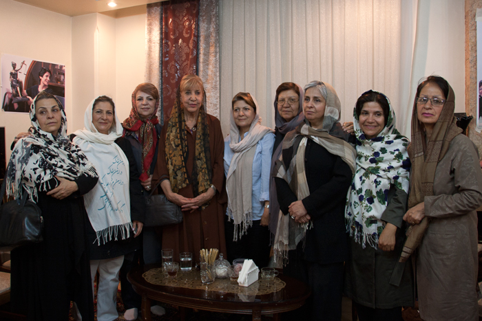
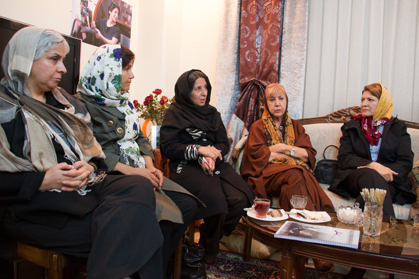

پذيرش > تریبون > نسرین ستوده در چه فشاری است که امروز با جان خود بازی می کند؟

 نسرین ستوده در چه فشاری است که امروز با جان خود بازی می کند؟ نسرین ستوده در چه فشاری است که امروز با جان خود بازی می کند؟
18 آبان 1389 - درخواست فعالان حقوق زن از نسرین ستوده برای پایان اعتصاب - نسخه قابل چاپ
صدای ما را بشنو و زنده بمان
نسرین ستوده وکیل حدود 40 فعال حقوق زنان، وکیل مخالف اعدام کودکان ، وکیل مدافع حقوق شهروندی و حقوق متهم ، اکنون در اعتصاب غذای خشک به سر می برد . او که به همه موکلان و تبعیض شدگان درس دفاع از حق می دهد، اکنون جانش را به دفاعیه اش بدل کرده است. او که جز جان خود ابزاری برای دفاع ندارد بااعتصاب غذا نشان می دهد که جان نحیف حقوق بشر در ایران چگونه روز به روز آماج حمله قرار می گیرد و چگونه مدافعان و وکلای آن، چنین مورد ظلم و خشونت قرار می گیرند. نسرین ستوده با اعتصاب غذایش از ما نمی خواهد که از او بخواهیم اعتصابش را پایان دهد؛ او وجدان قاضیان و داوران قضایی و وجدان جامعه بشری را و افکار عمومی را به یک خواست ساده ، توجه به حقوق متهم، فرا می خواند.

روز دوشنبه ( 17 آبان ماه) در کنار یار و زبان همیشگی جنبش زنان، سیمین بهبانی، حدود سی نفر از فعالان کمپین یک میلیون امضا، مادران صلح، مادران عزادار و مادران پارک لاله با حضور در منزل نسرین ستوده به دیدار همسرو فرزندانش رفتند تا ضمن اعلام همبستگی با خواسته های نسرین ستوده، با ابراز نگرانی از بی توجهی مسئولان قضایی نسبت به جان او، از این وکیل سرسخت حقوق بشر درخواست کنند که لااقل به خاطر آنها که دوستش دارند و به او نیاز دارند اعتصاب غذایش را پایان دهد.

چند ثانیه تماس در 70 روز: نسرین ستوده بر ادامه اعتصاب غذا اصرار دارد
در این دیدار رضا خندان، همسر ستوده، خبر از تماس تلفنی نسرین در روز گذشته داد، این در حالی است که تاکنون نسرین حدود 70 روز را در زندان انفرادی گذرانده است. او تا کنون موفق به ملاقات همسرش نشده است و تا دیروز جز یک تماس چند ثانیه ای حتی صدای همسرش را نیز نشنیده بود. ستوده در تماس آخر خود بر ادامه اعتصاب غذای خود تاکید کرده است و خندان در این تماس موفق به منصرف کردن او از ادامه اعتصاب نشده است. خندان می گوید اگر اجازه ملاقات به او می دادند می توانست همسرش را منصرف کند. با اینکه قاضی نامه ای به نام او برای ملاقات صادر کرده بود، ماموران بی توجه به نام او و خواهر نسرین مانع ملاقات آنها شده اند. در عوض مادر نسرین را با ویلچر به ملاقات برده اند. مادر نسرین از بیماری آلزایمر رنج می برد و دیدار او با نسرین بی فایده بوده است. چون او وضعیت دختر زندانی و شرایط حاد جسمی او را درک نمی کند.
اعتراض نسرین : این دو دفتر مال بچه هاست، باید پس اش بدهند
خندان می گوید: در بازرسی های منزل ما دو دفترچه خاطرات نسرین را برده اند که نسرین در آنها از دوران کودکی بچه ها می نوشت. دیروز نسرین یک کلمه از خواسته های خود یا وضعیت جسمی اش نگفت و مدام می گفت که این دو دفتر مال بچه هاست و باید پس اش بدهند. این بچه ها همه زندگی نسرین هستند و دائم با خودم فکر می کنم که نسرین در چه فشاری قرار گرفته است که امروز با جان خود بازی می کند.

نسرین تو مال همه ما هستی/ مطالبات نسرین را بیرون از زندان پیگیری کنیم
سیمین بهبهانی با ابراز نگرانی از وضعیت سلامت نسرین ستوده گفت: با وجود اعتصاب تر و یک هفته اعتصاب خشک باید گفت وضعیت ایشان در حال حاضر بسیار خطرناک است. جان نسرین ستوده برای همه ما مهمتر از هر چیزی است.
بهبهانی پیشنهاد یک نامه دسته جمعی خطاب به ستوده را داد و گفت: باید در این نامه به صورت جدی از نسرین بخواهیم که به حفظ جان خود بیاندیشد. ما به مبارزات او نیاز داریم و یک مبارز تا وقتی مبارزه می کند که زنده است. اگر نسرین به درخواست ما تن دهد مسئولیت این کار به عهده ماست و ما این را می پذیریم، او به خواهش ما تن داده و وظیفه ماست که با جدیت مطالبات نسرین را بیرون از زندان پیگیری کنیم. همه ما در شرایط خطرناکی هستیم، هیچ کس امروز با حس امنیت زندگی نمی کند. هر لحظه ممکن است عده با بهانه ای واهی یا حتی بی هیچ بهانه ای به خانه ات بریزند و تو را ببرند. شرایط نسرین عین شرایط ماست و به همین دلیل می توانیم به او بگوییم که تو مال همه ی ما هستی پس به خواهش ما توجه کن. این مردم در این شرایط به وکلایی نظیر ستوده نیاز دارند.

نسرین باید سالم بماند و مقامات قضایی هم باید به خواست او توجه کنند
خدیجه مقدم، فعال حقوق زنان، گزارشی از فعالیت های مادران کمپین یک میلیون امضا برای آزادی و پیگیری وضعیت نسرین ستوده ارائه کرد. مقدم مسئولیت شهروندی را دلیلی برای پیگیری وضعیت همه زندانیان از مجاری قانونی دانست و گفت: امروز در ستاد حقوق بشر قوه قضائیه نسبت به وضعیت نسرین ابراز نگرانی کردیم. شماره تماس هایمان را دادیم و خواستیم ترتیبی بدهند که نسرین بتواند با ما تماس بگیرد تا او را قانع کنیم که به اعتصاب خود پایان دهد. ما نسرین را هم سالم و هم سرفراز می خواهیم. نسرین باید سالم بماند و مقامات قضایی هم باید به خواست او توجه کنند تا او اعتصاب خود را با موفقیت پایان دهد. این نهایت بی وجدانی است که مسئولان برای خواسته های کوچک، دوستان ما را به جایی می رسانند که برای زندانی راهی جز گرو گذاشتن جانش برای کسب حقوق اش باقی نمی ماند.
وضعیت عالیه اقدام دوست، بهاره هدایت، محمد اولیایی فر و شبنم مدد زاده از جمله پرونده هایی هستند که مادران کمپین سعی دارند با مذاکره با متولیان حقوق بشر در قوه قضائیه دست کم شرایط نگهداری آنان در زندان را تغییر دهند.
یکی از پرونده هایی که به آن اشاره شد وضعیت یکی از مادران پارک لاله است که از بیش از 11 سال است که از فرزند بازداشت شده خود اطلاعی ندارد. فرزند او پس از حادثه کوی دانشگاه در سال 78 در منزل بازداشت شد و خانواده او تا امروز از وضعیت فرزندشان بی خبر هستند. پی گیری ها حتا برای اعلام مرگ و محل دفن او تا کنون بی نتیجه بوده است.
مقدم در پایان با یادآوری باور نسرین ستوده به قانون گفت: نسرین همیشه مدافع کار قانونی بوده و هیچ وقت تن به کاری خلاف قانون نداده است، امروز هم ما به عنوان خواهران نسرین باید بخشی از همین مسیر را برای احقاق حق او دیگر زندانیان طی کنیم.

این بچه ها نیازمند مادرشان هستند
پروین فهیمی، مادر سهراب اعرابی با استقبال از پیشنهاد خانم بهبهانی گفت: امروز دو کودک در خانه چشم به راه بازگشت مادرشان هستند. این بچه نیازمند مادرشان هستند و نیاز این ها از همه ما و موکلان نسرین به او بیشتر است. خواهش می کنم اگر توانستید این را از طرف من به نسرین بگویید که من به عنوان یک هم وطنی که شرایط این خانه را لمس کرده ام، خواهش می کنم جان خود را بیش از این به خطر نیاندازد.

هر لحظه ممکن است اتفاق ناگواری بیافتد: مگر نسرین چه کرده است؟
رضا خندان، همسر نسرین ستوده، ابراز امیدواری می کند که ارسال پیام دوستان و خانواده نسرین از طریق وکلا، همسرش را از ادامه اعتصاب منصرف کند. او می گوید: نمی دانم بدن نسرین چقدر می تواند مقاومت کند، هر لحظه ممکن است اتفاق ناگواری بیافتد، فرصت زیادی برای ما باقی نمانده است و نسرین هنوز در ادامه اعتصاب مصر است. نسرین 70 روز گذشته را در سلول انفرادی گذرانده است. هر ملاقاتی که با خواهرش داشته همراه با یک اکیپ محافظ بوده، 5مامور بالای سر آنها بوده اند، حتی یک دستمال کاغذی را از دست خواهرش گرفته اند مبادا یادداشتی در آن نوشته شده باشد، مگر نسرین چه جرمی مرتکب شده است که نمی گذارند او را ببینم. قاضی به ما گفته است 25 روز بعد از بازداشت تحقیقات پایان یافته است. بنابراین باید با نسرین مثل یک زندانی عادی برخورد کنند. نسرین چه کرده است که حتی اجازه شرکت او در مراسم ختم پدرش را نمی دهند. من در چنان بی خبری ای از همسرم به سر می برم که اگر به من بگویند او الان در لبنان یا سوریه یا آمریکاست باور می کنم چون 70 روز است کسی به من جواب درستی نمی دهد.
به گفته خندان، وکلای نسرین ستوده روز سه شنبه با وی ملاقات خواهند داشت. آنها امیدوارند در دیدار با موکلشان او را از ادامه اعتصاب منصرف کنند. این در حالی است که حال ستوده رو به وخامت می گذارد. به گفته خواهر ستوده وضعیت ظاهری او به شدت نگران کننده است.
نامه ای خطاب به نسرین: مسئولیت پایان این اعتصاب را می پذیریم
در پایان این دیدار، حاضران نامه کوتاهی را خطاب به ستوده امضا کردند و در آن تاکید کردند که به رغم احترامی که به تصمیم او می گذارند، مسئولیت پایان این اعتصاب را می پذیرند. این جمع در قسمتی از این نامه آورده است: جهان صدای حق طلبی تو را شنیده است و حال ما از تو می خواهیم صدای ما را از آن سوی دیوارها بشنوی و جان خود را بیش از این به خطر نیاندازی. از تو می خواهیم به اعتصاب غذای خود پایان دهی و پیمان می بدیم همراه تو در راه احقاق حقوق بدیهی تو تلاش کنیم. امروز وطن نیازمند گام های استوار توست و تو را ادامه راهت تنها نخواهیم گذاشت.
اعتصاب غذا بیش از دو هفته خطر کما و ایست قلبی دارد. بالا رفتن اسید معده، غلظت خون، پایین آمدن فشار خون و آسیب معده، کبد و چشم عوارض اعتصاب های طولانی تر و خشک است. بخشی از این آسیب ها همیشگی است. ستوده تا امروز یک هفته را در اعتصاب غذای خشک به سر برده است.

نسرین ستوده روز سیزدهم شهریورماه، پس از احضار به دادسرای زندان اوین بازداشت شده است. وی پیش از این نیز مدت 3 هفته در اعتصاب غذا بوده و به تازگی پس از درخواست خانواده و فعالان سیاسی و اجتماعی آن اعتصاب غذا را شکسته بود.
فعالان کمپین یک میلیون امضا پیش از این نیز به دیدار خانواده نسرین ستوده رفته اند.
ارسال به
بالاترین
،
توییتر
،
فریندفید
،
فیسبوک
در همين بخش :
 دهمین دورۀ مراسم تندیس صدیقه دولت آبادی ۱۳۹۲ دهمین دورۀ مراسم تندیس صدیقه دولت آبادی ۱۳۹۲
کارت پستالهایی به بهانهی هشت مارس و به یاد همهی مبارزین راه برابری
بیانیه بیش از 350 تن از مدافعان حقوق زنان به مناسبت روز جهانی زن؛ زنان هر روز فرودستتر میشوند
لباسی که برای تن ما دوخته اند! /اعظم بهرامی
چالشها و چشمانداز فعالیت مدنی زنان
ديگر بخش ها :
طرح یک میلیون امضا
|
مقالات
|
سایت نوشته ها
|
اخبار
|
گزارش كمپين
|
گفت و گو
|
علیه سکوت
|
كوچه به كوچه
|
نامه های شما
|
گزارش ویژه
|
گفتگو با اعضا
|
ویژه سالگرد کمپین
|
تصویر برابری
|
دل آرام علی
|
تریبون
|
مقالات
|
تاریخ شفاهی
|
خارج از چارچوب
|
کتابخانه
|
درباره کمپین
|
کمپین در شهرها
|
کمپین در بند
|
صدای تغییر
|
ویژه 22 خرداد
|
لایحه حمایت از خانواده
|
گالری
|
عشا مومنی
|
امیر یعقوبعلی
|
خدیجه مقدم
|
راحله عسگری زاده و نسیم خسروی
|
پروین اردلان،جلوه جواهری، مریم حسین خواه، ناهید کشاورز
|
زینب پیغمبرزاده
|
سعیده امین، سارا ایمانیان، محبوبه حسین زاده، ناهید کشاورز و همایون نامی
|
احترام شادفر
|
نسیم سرابندی زاده،فاطمه دهدشتی
|
وبلاگ مهمان
|
پرونده خرم آباد
|
دستگیری ها
|
مریم مالک
|
پرستو اللهیاری
|
مهرنوش اعتمادی
|
سمیه رشیدی
|
Other Languages
|
همراهان
|
«فراخوان کمپین ده روز با بهاره هدایت»
| English
|